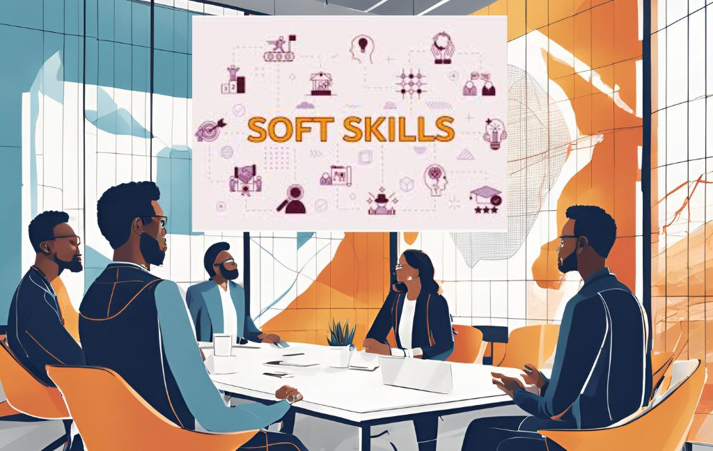

Soft Skills & leadership
Leadership is vital for driving vision, inspiring teams, and fostering innovation. A strong leader enhances team cohesion, boosts morale, and ensures effective decision-making. Hiring someone with leadership skills brings strategic focus, improves productivity, and cultivates a culture of growth and accountability in the organization.
Soft Skills & leadership
Technical skills are of vital importance, however, it is the soft skills that allow the permanence in a job, with my hyperfocus on studies I have made several forays into the world of soft skills, especially focused on leadership.

Leadership
- Diversidade, Inclusão e Pertencimento para Líderes e Gerentes, LinkedIn Learning, 11/05/2022 4h 32 min.
- Gestão Intercultural nas Organizações, LinkedIn Learning, 11/05/2022, 46min.
- Vieses Inconscientes na Tomada de Decisão, LinkedIn Learning, 10/05/2022, 24min.
- The Manager’s Guide to Effective One on One Meeting, UDEMY, 05/05/2022, 1,5h.
- Diversidade e Inclusão em uma Empresa Global, LinkedIn Learning,02/04/2022, 53min.
- Liderança Inclusiva, LinkedIn Learning, 29/12/2021, 1h.
- Desafios do Amanhã: Liderança, Empreendedorismo e Diversidade UNINASSAU 10/2021 4h.
- Desenvolvimento Profissional e Equilíbrio Pessoal UNESC DIGITAL 09/2021 4h.
- Certificação em Liderança, Capacidade de Aprender e Resiliência, Pontifícia Universidade Católica do Rio Grande do Sul PUCRS, 29/08/2021 4h.
English
- Língua Inglesa: Different Types of Text Fundação Bradesco Escola Virtual 06/2021 4h.
- Língua Inglesa: Adjectives Fundação Bradesco Escola Virtual 06/2021 4h.
- Língua Inglesa: Basic Review Fundação Bradesco Escola Virtual 06/2021 4h.
Emprendedorismo
- Microsoft Teams: Formação Básica, LinkedIn Learning, 29/12/2021 2,5h.
- Empreendedorismo - Novos Negócios, Cisco Networking Academy / SENAC SP - Serviço Nacional De Aprendizagem Comercial, 20/12/2021 14h.
- Word para Microempreendedor, Instituto MIX de Profissões, 16/11/2021 4h.
Finanzas
- Curso de Finanzas Personales, UDEMY, 04/04/2022 3,5h.